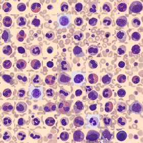

Blood Cell Classification with Machine Learning & Deep Learning
How much does learning spatial image features help when classifying microscopic blood-cell images? We compared a Random Forest baseline with a compact PyTorch convolutional neural network on eight BloodMNIST cell categories.

BloodMNIST sample imagery from the project materials; microscopy image data, not model-generated predictions.
Research question & dataset
The goal was to test whether a compact CNN could outperform a traditional classifier on histology-style image inputs, while examining performance across individual cell types rather than accuracy alone. BloodMNIST contains eight categories of preprocessed RGB blood-cell microscopy images. Our project used 11,959 training images and 3,421 test images.
Two models, one comparison
01 / Random Forest baseline
Flattened image arrays into feature vectors and fitted a scikit-learn RandomForestClassifier with 100 trees. The model provides a straightforward non-convolutional reference point.
02 / Compact PyTorch CNN
Converted RGB images to tensors, normalized pixel values, and trained a network with two convolutional layers, ReLU activations, max pooling, and two fully connected layers using Adam.
Results on the held-out test set
| Metric | Random Forest | CNN |
|---|---|---|
| Accuracy | 83.10% | 90.76% |
| Macro F1 | 0.8004 | 0.8923 |
| Macro one-vs-rest AUC | 0.9743 | 0.9916 |
| Test images | 3,421 | 3,421 |
The CNN improved test accuracy by 7.66 percentage points compared with the baseline, and also achieved higher macro-averaged F1 and ROC-AUC values. The results come from saved notebook outputs, not a new training run.
What class-level evaluation revealed
High overall accuracy did not mean every cell category was equally easy to recognize. In the CNN classification report, the F1-score was approximately 0.784 for monocytes and 0.798 for immature granulocytes, compared with 0.999 for platelets. This highlights why per-class metrics and error analysis matter in imbalanced biomedical datasets.
Beyond model scores, the comparison illustrates a practical difference between flattened-pixel features and convolutional representations that learn localized visual patterns.
Collaboration & methods
This was a collaborative project by Jennifer Zhu and Muyun Tsen. We worked together on the classification workflow, baseline and CNN modeling, evaluation, interpretation, and reporting; individual contributions were not separately documented.
- Prepared image arrays and tensors for model training.
- Compared traditional machine learning with a compact deep learning architecture.
- Evaluated accuracy, precision, recall, F1-score, and one-vs-rest AUC, including class-level results.
- Discussed model capacity, class imbalance, performance trade-offs, and computational efficiency.
Limitations & next steps
This was a course-scale benchmark rather than a clinically validated diagnostic system. We did not establish external generalization, and the notebooks do not document repeated seeded runs or uncertainty intervals. Potential next steps include reconciling the weighted-loss experiment, adding a confusion matrix, setting random seeds, recording training configurations, and testing stronger baselines or augmentation under a consistent protocol.